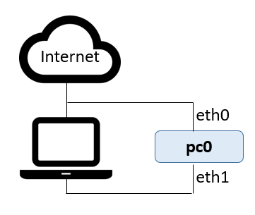
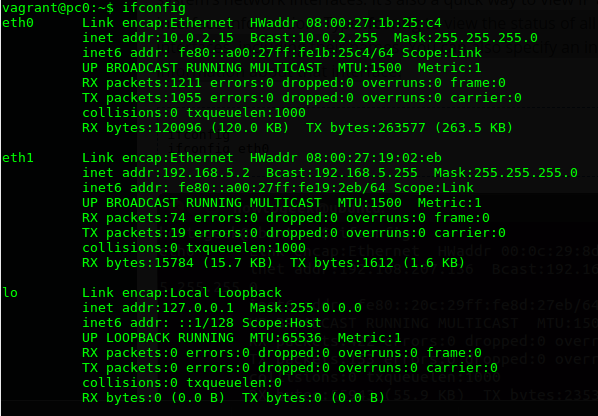
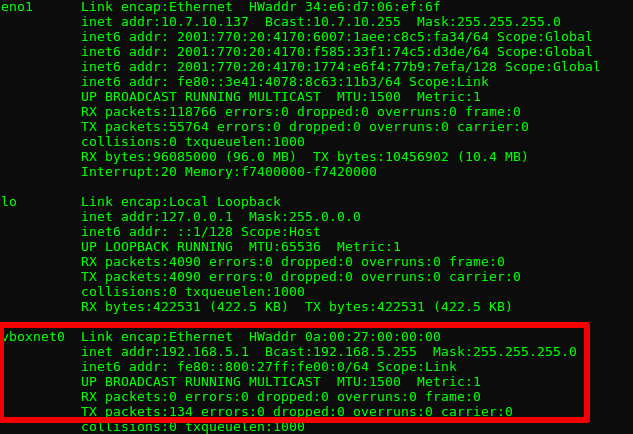
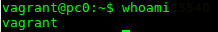
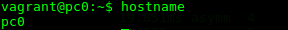
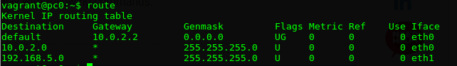

Vagrant and Virtualisation
Vagrant · Virtualisation · SSH · Network
Objectives
- Provision a virtual machine(VM) using Vagrant
- Connect to the VM using Secure shell(SSH)
- Create a file on the VM in the synced directory and edit it on the host
- Run a simple Java program on the VM
- Use common Linux network commands
Prerequesites
- Virtualbox
- Vagrant
Vagrant up!
Command Line Interface(CLI)
The script examples in this lab use the Linux operating system. We will be using linux Command Line Interface(CLI) extensively and the term 'terminal' is often used to describe a program that provides a CLI.
Vagrant
Vagrant's purpose is to manage and configure our virtual machines. In the preparatory lab, you created a Vagrant project from scratch using the "vagrant init" command. You will now modify the Vagrantfile to add more detail.
The Vagrantfile describes the machine(s) used in the project, and how to configure and provision these machines.
In the preparatory lab you created a directory called vagrant-onsite-day. Open the Vagrantfile in this directory and have a look at the contents. You'll see that it's filled with example code. Vagrantfiles are written in the programming language Ruby. Don't worry, knowledge of the Ruby programming language is not necessary.
Replace the contents of the file with the following:
VAGRANTFILE_API_VERSION = "2"
Vagrant.configure(VAGRANTFILE_API_VERSION) do |config|
config.vm.define "pc0" do |pc0|
pc0.vm.hostname = "pc0"
pc0.vm.network :private_network, ip: "192.168.5.2"
end
config.vm.box = "frankwalsh/labvm"
config.ssh.forward_x11 = true
endAn IP address provides an identity to a networked device. Similar to your home or business address supplying that specific physical location with an identifiable address, devices on a network are differentiated from one another through IP addresses. The above script configures a virtual machine, "pc0", with IP address of 192.168.5.2 in a virtual private network (think of a private network as a separate network contained inside the virtual environment). The config.vm.box variable describes the image used for the machine. In this case it's the same one used in the preparatory lab so you should have it downloaded already.
Now open a terminal window in the root directory and enter the following command to start the VM:
$ vagrant upThis will take a few minutes to complete if you haven't done the preliminary lab as the VM image will need to be downloaded the first time it's started. It will be much quicker for subsequent start ups. After it finishes, it will have created the following virtual environment on your machine: 
All going well, we should now be able to "see" and connect to pc0 using a remote shell (like ssh), using the dedicated IP address, just as if it was a "real" remote machine.
Secure Shell (SSH)
Although you've started a new virtual machine, you will not actually see anything since Vagrant runs the virtual machine without a Graphical User Interface (one good reason for this is that no UI requires less resources on the host machine, i.e. your laptop). To access the machine, we will use Secure Shell (SSH).
SSH provides a secure channel connecting an SSH client with an SSH server. We will use it in one of it's most common usages. remote command-line login and remote command execution.
Vagrant has a built in command to start a SSH session with a virtual machine.
Open a terminal window in the directory containing the Vagrantfile and enter:
vagrant ssh pc0This will start a session with pc0. The session should start by displaying VM info:
$ vagrant ssh pc0
Welcome to Ubuntu 14.04.1 LTS (GNU/Linux 3.13.0-37-generic x86_64)
* Documentation: https://help.ubuntu.com/
System information as of Wed Mar 7 12:37:30 UTC 2018
System load: 0.04 Processes: 77
Usage of /: 3.8% of 39.34GB Users logged in: 0
Memory usage: 25% IP address for eth0: 10.0.2.15
Swap usage: 0% IP address for eth1: 192.168.5.2
Graph this data and manage this system at:
https://landscape.canonical.com/
Get cloud support with Ubuntu Advantage Cloud Guest:
http://www.ubuntu.com/business/services/cloud
New release '16.04.4 LTS' available.
Run 'do-release-upgrade' to upgrade to it.
Last login: Wed Mar 7 12:37:30 2018 from 10.0.2.2
vagrant@pc0:~$You are now logged in to the VM via SSH. This is a linux machine so you can use all the usual linux CLI commands to navigate, configure, change etc.
- Change directory to /vagrant
vagrant@pc0:~$ cd /vagrant vagrant@pc0:/vagrant$
You are now in the defaults vagrant directory which shares with the root Vagrant project directory on the host machine. Check this is the case by running ls. You should see your Vagrantfile.
Vagrantfile basics
Lets take a closer look at the Vagrantfile. Note the following:
- The location of the vagrantfile indicates the root directory of your vagrant project.
- The contents of the Vagrantfile describes the machine and resources you need to run your project.
- The Vagrantfile specifies what software to install and how you want to access it.
As you've already seen, Vagrant shares your project directory to the /vagrant directory in your guest machine.
In the SSH session with pc0, type cd /vagrant at the command prompt to change directory to the shared directory:
vagrant@pc0:~$ cd /vagrantNow type ls at the command prompt to list the contents of the shared directory
vagrant@pc0:/vagrant$ ls
vagrantfileYou will see at the moment you only have one file in that directory at the moment.
Type touch HelloWorld.java at the command promu to create a new, empty, file called 'HelloWorld.java'
vagrant@pc0:/vagrant$ touch HelloWorld.java
vagrant@pc0:/vagrant$ ls
HelloWorld.java vagrantfile
vagrant@pc0:/vagrant$Now close the vagrant ssh session using the 'exit' command:
$ exitHave a look at the the contents the your project directory on your host machine. You should see HelloWorld.java that you created in pc0. Using an editor on your host machine, add the following code to the file and save.
public class HelloWorld {
public static void main(String[] args) {
// Prints "Hello, World" to the terminal window.
System.out.println("Hello, World");
}
}As you know from programming module, we need to compile the above source code to byte code (i.e. HelloWorld.class) before we can run it. Java 8 has already been installed on the VM box you are using. Let us now compile and run some source code.
Open a new SSH session with pc0 and enter the following commands in the SSH session to compile and run HelloWorld.java:
vagrant@pc0:/vagrant$ javac HelloWorld.java
vagrant@pc0:/vagrant$ java HelloWorld
Hello, WorldThe Network
Lets have a look at the environment you've created from a network perspective...
If don't already have a SSH session open, SSH into pc0 by opening a terminal window in your vagrant-onsite-day directory and enter "vagrant ssh" at the command prompt.
Now lets explore some Linux terminal commands that are useful for networking.
ifconfig
In order for a device to connect to a network, it needs a network interface. The ifconfig utility provides a quick and easy way to view network interface information on a machine.
In your ssh session, type ifconfig to view the status of all currently active network interfaces, including their names. You should see something similar to the following:

Note some significant information here, namely the interface names and their IP(Internet Protocol) addresses. Note that the interface eth1 with ip address(inet addr) 192.168.5.2 is what you specified in the Vagrantfile.
Now open a new, separate terminal window on the host machine and type ifconfig or ipconfig /all(depending on your host OS) to view the status of all currently active network interfaces on your host. You should see something similar to this:

You should be able to see the Virtualbox Host-Only adapter as indicated in the above image with an IP address of 192.168.5.1.
Who am I?
Just in case you forget who you are (as in what user you're currently working as on a machine) you can use the whoami command. Type whoami at the command prompt and it should well you you're vagrant (as that's who you logged in as with the ssh session).

hostname
The hostname command lets you know what host name is being used to identify you in the network. In the ssh session, type hostname at the command prompt to see the hostname of your machine. As you can see, it's what we specified in the Vagrantfile, pc0.

PING
PING(Packet INternet Groper) sends ECHO_REQUEST packets to the IP address you specify. It’s a handy way to see whether your machine can communicate with the Internet or another machine. However many machines are configured not to respond to pings so, if you don't get a response, it doesn't mean the machine is not connected and available for communication.
In you ssh session with the pc0, let's ping the host machine (i.e. your laptop). Vagrant would have created a virtual network interface with the address 192.168.5.1.
In the SSH session, type ping 192.168.5.1 to see of it connects. You should see responses similar to the following:
You can also use Ping to check if you can connect to the internet. Type ping google.ie to see if you can get a response from Google. This time, you should see something like this: Notice that you used a domain name this time. In this case, your machine would have used Domain Name System (DNS) to get the IP address for a "google.ie". As you can see, in this example the IP address is 209.85.203.94 and we got a successful reply so the virtual machine, pc0, is connected to the internet!
Notice that you used a domain name this time. In this case, your machine would have used Domain Name System (DNS) to get the IP address for a "google.ie". As you can see, in this example the IP address is 209.85.203.94 and we got a successful reply so the virtual machine, pc0, is connected to the internet!
We'll cover more about DNS in future coursework.
Tracepath
Tracepath is a network troubleshooting utility which shows the number of "hops" taken by network "packets" to reach a destination and also determine the travelling path through the network. In the SSH session, type tracepath www.tssg.ie to see the path though the network to the tssg web site. You should see responses similar to the following:
Route
Most connected machines use routing tables to compute the next hop for a packet. you can use the route command to show the local ip routing table for the machine pc0. To see default routing table in Linux, type route at the command prompt.

You will see three entries. The default entry indicates the "default gateway" address. This is the destination address where all traffic will be sent if the destination is not on any of the other connected routes (this is analogous to the "all other routes" road signs you might see on the road). The other two entries relate to the networks connected to interface eth0 and eth1. Run the ifconfig command again and examine this in relation to the routing table. Based on this, we can say the any network traffic from this machine to a destination address starting with 192.168.5.* will be routed(sent out) to eth1, everything else will be on eth0.
Exercises
So you've all connected to the Wifi with your host machines So you should be able to ping each others host machines from your virtual machine, pc0. Try the following:
- Determine the ip address of your host machine on the Wifi network.
- Ask your neighbour (or help them) what their IP address is.
- SSH into your virtual machine (pc0) and ping them. All things going well you should see a successful response.
- Also, do a tracepath using a neighbours IP address. Does it complete successfully and how many hops does it take?